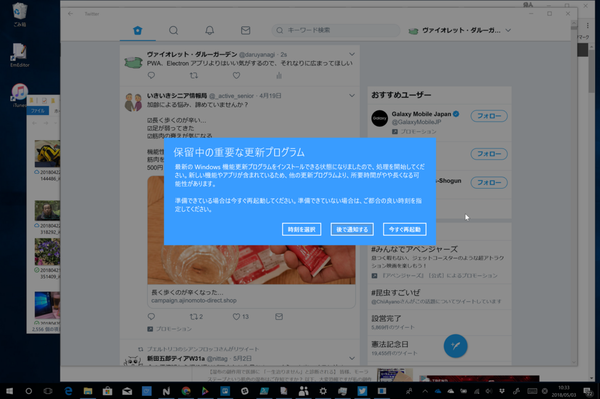
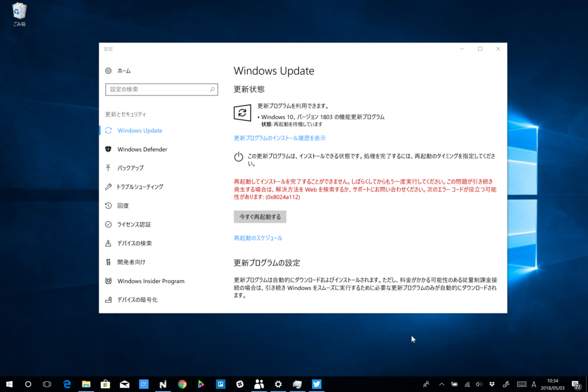
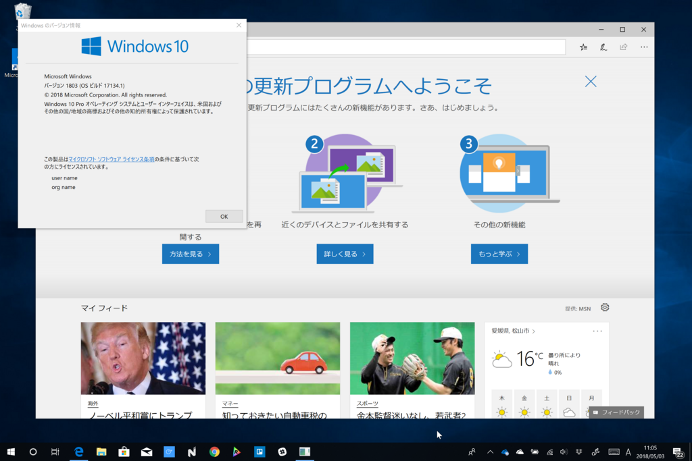

Windows 10 April 2018 Update を Surface Book 2 に導入
公開日：
いささか旧聞に属するが、Surface Book 2 に Windows 10 April 2018 Update を入れた。
Windows 10 April 2018 Update もこれまでの機能アップデートと同様、段階的にリリースされるはずだけど、Surface Book 2 は Microsoft 製デバイスだからか、解禁とともに入手できるようになっていたようだ（うちでアップデートしたのは5月3日だけど、1日にはバッグラウンドでダウンロードされていたみたい）。

PWA「Twitter」アプリを試してたらアラートがでたので、ちょうど朝昼兼食タイムだったこともあり、そのままアップデートを実行――したのだが、失敗／(^o^)＼

0x8024a112 エラーがでた。ただ、このエラーはたいしたことがない（？）ようで、［スタート］画面左下の電源アイコンから［更新して再起動］などを選ぶと問題なくアップデートできるらしい。


世間では Google Chrome や Cortana で問題が発生していると話題だけど、うちの端末はとくに問題なし。ただ、期待の「Quiet Hours」機能（日本語では「集中モード」かな？）が効いていないというか、Age of Empires で遊んでるあいだもトーストがでる。
Windows 10 の機能アップデートも早……何回目だっけ？ 数えるのめんどくさいや。ともかく、回数を重ねるにつれて慣れてきたというか、標準的なデバイス構成であればトラブルなく、サクッとアップデートできるようになってきたようでなにより。今回は
- Edge のインク機能強化（PDF/EPUB
- dGPU 設定
- 手書き入力の強化
あたりが Surface Book 2 向けの強化といえるだろうか（ほかにもいっぱいあるけど）。どれもまだ試せていないけれど、アップデートのたびに使い勝手がよくなっていてうれしい。